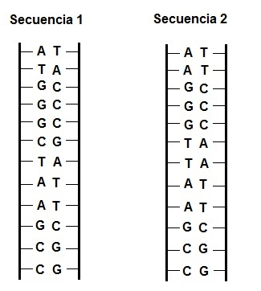
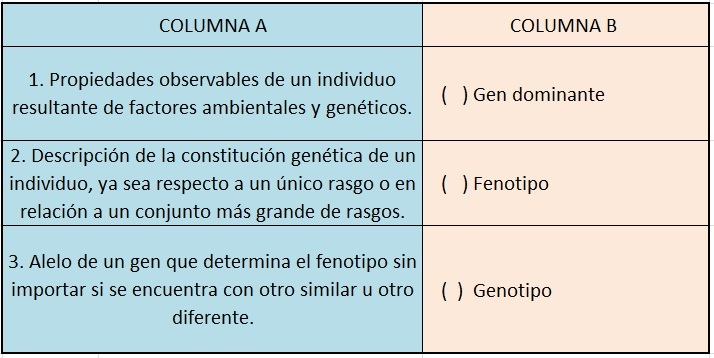

La asombrosa selección natural - Evaluación Unidad 1
Con base en la unidad 1: “Un canguro blanco y la fábrica de proteínas” responde.
-
En un animal (un organismo eucariota) podemos encontrar ADN:
Solamente en sus gametos.
En el núcleo de sus células.
En las membranas celulares.
En los ribosomas de las células
-
Observa el siguiente par de secuencias de ADN
Se puede decir que estas son:
Exactamente iguales.
Difieren en un par de bases nitrogenadas.
Difieren en dos pares de bases nitrogenadas.
Una es de ADN y la otra de ARN.
-
En un momento dado en un parque hay perros, gatos, gorriones y humanos. Si comparáramos el ADN de estos organismos entre si se podría encontrar que las mayores similitudes se hallarían:
Entre organismos de la misma especie.
Entre organismos que habitan bajo un mismo techo.
Entre gatos y gorriones, y luego con los perros.
Entre perros y humanos, y luego con los gorriones.
-
A continuación se presentarán una serie de acontecimientos en desorden:
El ARN mensajero sale del núcleo celular.
La proteína queda ensamblada.
Un gen en el núcleo se desenrolla.
La información contenida en el ADN se transcribe a ARN mensajero.
En el ribosoma se leen cada tres letras del ARNm
Por cada 3 letras del ARNm (codón) se pone un aminoácido.
El orden correcto de los anteriores eventos es:
2 - 3 - 1 - 5 - 6 - 4
3 - 4 - 1 - 5 - 6 - 2
3 - 4 - 5 - 6 - 1 - 2
2 - 1 - 4 - 5 - 6 - 3
A continuación se presentan tres conceptos claves. Las definiciones y los conceptos se encuentran en columnas separadas.
Los números de la columna B en su orden son:
1 - 2 - 3
3 - 2 - 1
2 - 1 - 3
2 - 3 - 1

A continuación se presentan tres conceptos claves. Las definiciones y los conceptos se encuentran en columnas separadas.
Los números de la columna B en su orden son:
1 - 2 - 3
3 - 2 - 1
2 - 1 - 3
2 - 3 - 1
-
En sus experimentos con arvejas o guisantes Gregor Medel encontró que estas plantas tienen dos fenotipos respecto a la longitud del tallo: largo (1 metro) y corto (30 cm.). Se sabe que el gen para tallo largo es dominante y el de tallo corto es recesivo.
El resultado del cruce de dos plantas con los genotipos: Aa x aa dará como resultado

50% de plantas altas y 50% plantas enanas.
75% de plantas altas y 25% plantas enanas.
100% plantas altas.
100% plantas enanas.
En una especie de peces existen dos variantes fenotípicas de la característica longitud de la cola. A su vez existen dos genes responsables de esta característica: A & a. El gen A codifica para una proteína que hace que la cola sea larga, y el gen a hace que la cola no crezca tanto. Ambos genes se heredan siguiendo las leyes de la herencia mendeliana. El gen A es de aparición más reciente, y es resultado de una mutación del gen a. Observa la siguiente información.

-
En un experimento se cruzaron dos peces de cola larga, y al analizar el fenotipo de la descendencia de evidenció que un 25% aproximadamente tenía la cola corta. Según lo anterior los estudiantes que hicieron el experimento pueden concluir que el genotipo de los padres es:
AA x Aa
Aa x Aa
Aa x aa
AA x AA
-
Se puede asegurar que para que un pez de esa especie tenga la cola corta debe poseer
una mutación.
dos genes dominantes.
dos genes recesivos.
un gen dominante y otro recesivo.
-
Un cultivo de moscas de laboratorio de la misma especie se sometió a luz ultravioleta de forma intermitente durante tres horas al día durante dos meses. Al terminar este período aparecieron unas pocas moscas con alas muy reducidas incapaces de volar. Este cambio fenotípico podría explicarse por:
El incremento en la síntesis de proteínas ya existentes.
La disminución de ribosomas en las células debido a la luz ultravioleta.
El cambio de la secuencia de aminoácidos en una proteína a causa de la reproducción sexual.
El cambio de la secuencia de nucleótidos de un gen.
Componente axiológico:
En la población humana hay una gran diversidad genética que se expresa, entre otras características, en diferentes tonos de piel. En diferentes momentos de la historia se ha discriminado y segregado a grupos humanos por el color de su piel. Redacta un texto, de mínimo tres párrafos, en el que expliques porque la discriminación es incorrecta y que propones para que las injusticias llevadas a cabo por el racismo no se presenten de nuevo.
Comentarios
Comments powered by Disqus